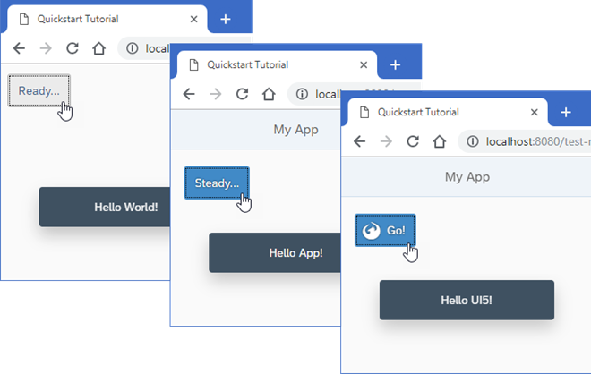

We create an app with two pages and a navigation button to navigate between the pages.

If you want to skip one or more steps, you can jump directly to the step you're interested in. Then simply download the code from the previous step, and start learning from there. You can download the code for each step in the Quick Start Sample.
All you need to build your app, is a Web browser, a Web server, and a development environment of your choice. For more information, see the links below.